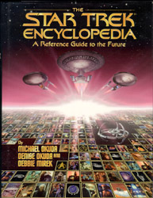
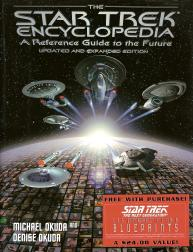
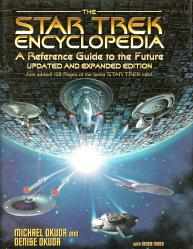
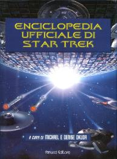

Star Trek Encyclopedia |
|
|
|  | |
|  | |
|  | |
|  |
| AUT | Michael Okuda Denise Okuda |
| PAG | 396 (prima edizione) 630 (seconda edizione hardcover) 746 (terza edizione hardcover) |
| EDI | Pocket Books, 1994 (prima edizione) Pocket Books, 1997 (seconda edizione hardcover) Pocket Books, 1999 (terza edizione hardcover) |
| ISBN | 0-671-86905-1 (prima edizione) 0-671-53607-9 (seconda edizione hardcover) 0-671-03475-8 (terza edizione hardcover) |
| Edizione Italiana | Enciclopedia ufficiale di Star Trek |
| PAG | 938 |
| EDI | Fanucci, 2001 |
Una guida illustrata enciclopedica definitiva sull'universo di Star Trek:
episodi, personaggi, luoghi, astronavi... Tutto quanto raccolto in ordine
alfabetico e arricchito da moltissime illustrazioni inedite e foto di scena.
La prima edizione del 1994 è aggiornata fino alla prima stagione di Deep Space
Nine; la seconda edizione del 1997 è aggiornata fino alla quarta stagione di
Deep Space Nine e alla terza stagione di
Voyager; la terza edizione del 1999 è aggiornata fino alla quinta stagione di
Voyager con gli aggiornamenti collocati in un'appendice di 128 pagine.